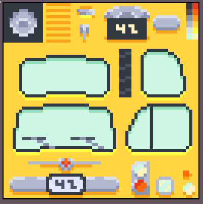
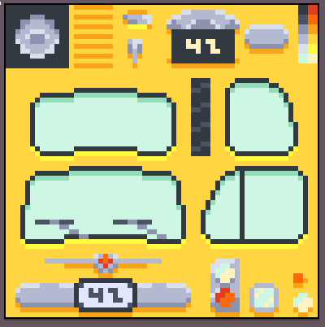

Pistacchio & Co.
Un nuovo modo di scoprire il Mondo.
 


Servizi.
Sono una singola famiglia che perde un sacco di tempo in progetti perfetti non finiti.
Siamo una piccola realtà composta da 8 persone unite dalla passione per il fare bene ad un prezzo conveniente. La nostra azienda nasce con un obiettivo semplice: creare tutto ciò di cui puoi avere bisogno, con cura, qualità e attenzione ai dettagli. Ogni prodotto che realizziamo racconta il nostro impegno quotidiano e il desiderio di offrire soluzioni su misura, pensate per semplificare più possibile la vita dei nostri clienti. La nostra punta di diamante è il “prodotto perfetto”, il risultato di esperienza, creatività e dedizione: una sintesi di funzionalità e bellezza che rappresenta al meglio ciò che siamo. Per chi se lo stesse chiedendo: sì, siamo gli stessi che vi hanno portato la "forbice da topologia" e la "pressa idraulica per arance"; anche se non ci conosci ti siamo sempre vicino.
Chi siamo.
Il Team migliore da questa parte del pacifico.
Siamo otto. Tutti Stefano. Otto persone, un solo nome, ma tante menti e mani diverse che danno vita a un’unica visione: creare senza limiti. C’è Stefano, il CEO & Fondatore, che da 25 anni non ha mai smesso di produrre, sperimentare e inseguire l’idea del “prodotto perfetto”. Poi Stefano, il Lead Designer, che dà forma alle intuizioni con una plasticità inconfondibile; ogni sua curva, ogni linea, parla il suo linguaggio. A seguire Stefano, lo scultore, che trasforma in materia le idee: argilla, plastica, legno e carta, tutto prende vita dalle sue mani. Gli altri cinque Stefani completano la squadra: Stefano 3D Render, che illumina e modella il futuro digitale, Stefano il Mangaka, che traduce emozioni in tratti e inchiostro, Stefano il Cinofilo, che porta equilibrio e istinto nel gruppo, Stefano il Programmatore, che dà logica e struttura ai nostri sogni, e Stefano delle Risorse Umane, che tiene uniti tutti… anche quando discutiamo su chi sia “il vero” Stefano. Otto nomi, una sola identità: Stefano. Insieme, creiamo tutto ciò che puoi immaginare.
Le tre teste principali per i nostri svariati progetti:

Stefano
CEO & Founder
Il colore giallo mi ricorda tanto i limoni, e a me proprio non piacciono i limoni.

Stefano
Disegnatore
Le forme sono la prima fonte di ispirazione per alzarmi la mattina.

Stefano
Modellista
La pietra fredda non la tocco ormai da anni.